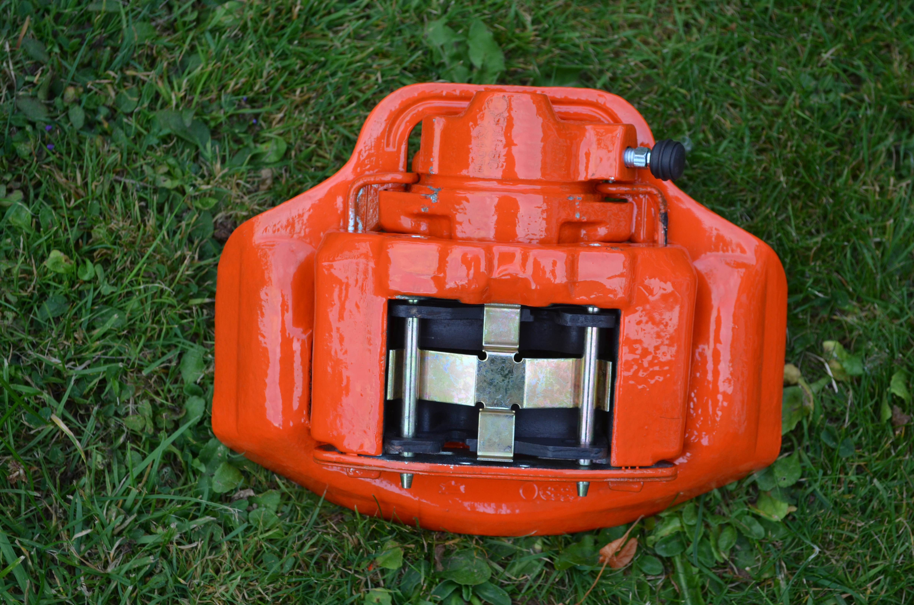
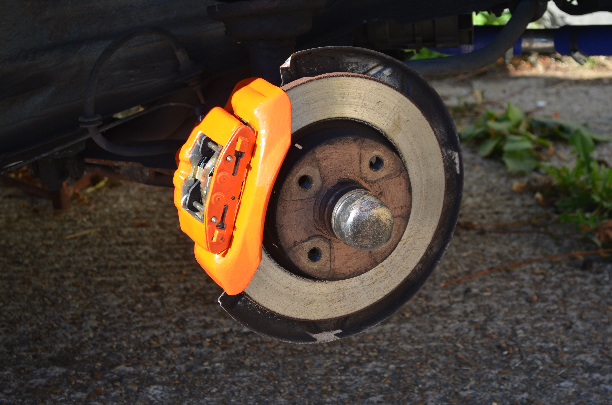

My first venture into Porsche restoration arrived out of the blue in about March 2015.
I knew someone who owned a red 924 which needed a good deal of love and
attention. He needed to sell it to finance the purchase of another car and
wondered if I fancied buying it.
The car was in a terrible state. Half
the interior had been ripped out and the bodywork was terrible.
Without thinking twice, I discovered I had bought it.
I've always been
a bit prone to making decisions without really thinking them through.!!
I eventually managed to find the time to have a look at it and decide what the important jobs were. I figured that as half the electrics didn't work, I would try to trace some of those faults first. I started by stripping out the interior so that I would have better access to the wiring. Out came the seats and dashboard. It was at this moment that I got my next surprise. At some point in it's life the car had obviously suffered from a lot of rot and none of it had been fixed. The battery tray had rotted away and instead of cutting out all the dead tin and fixing it, somebody had just welded a plate in over the top. This was fine for the battery but it meant that all the earth blocks for the wiring, which were supposed to be attached underneath the battery plate and behind the fuse box, were waving about in the breeze. This was the cause of half the electrical bits not working correctly.
The discovery of so much rot came as a bit of a blow. I new the car was a bit rough but hadn't realised it was quite so bad. I decided at this point that the car was not a viable restoration so I stripped out as much as I could that I considered useful, and sold what was left of the shell to somebody who wanted it for a new sill, the only bit of the car that was actually in a half decent condition.
As terrible as the red porsche was, I had been bitten by the Porsche bug so I set about looking for another one. I kept an eye out on the online car sales websites and eventually found one that looked ideal.

.JPG)
It involved a train ride to Bedford and I reasoned that taking the train would mean I could bring it back the same day. When I got to Bedford, the guy selling the car, met me at the station.
First appearances seemed quite promising. The paintwork seemed pretty good and the inside wasn't in too terrible a condition. The usual cracked dashboard and worn drivers seat but other than that it all seemed good. I took it for a test drive and decided that it was the one for me. Having negotiated the price down to what I considered to be reasonable, I parted with the cash and the car was mine. The drive down the M1 allowed me to get used to the car and it was then that I started to notice a few other things that weren't quite right. The temperature gauge and the fuel gauge weren't working properly and the odometer was stuck at 89000. I also discovered that the gearbox was a bit crunchy and the clutch would need replacing at some point. The car was by no means in a perfect condition but then it was over 30 years old. All these problems could be solved with a bit of TLC.
It just so happened that when I bought the blue Porsche, my girlfriend, was on holiday in Canada. This was lucky for me because she would have been less than impressed at my impulsive purchase. When she found out, she vowed to dislike the car but it only took one journey to persuade her that it was an amazing car and now she loves it to bits.
There is nothing quite like the feeling of cruising down the motorway and feeling the admiring glances of other road uses as they go by.
One of the first jobs I did was to change the standard steering wheel for a
removable racing wheel.
The reason for this was that the original wheel
didn't leave room for my knees and felt huge. There was also the added benefit that
a removable steering wheel acts as a great theft deterrent in the absence of
any other anti-theft device.
I bought a 300mm steering wheel from Ebay and to go with it, a removable boss kit to allow the wheel to fit on the spline.
The new steering wheel came with a separate horn button. It had 2 wires coming from it. To start with this confused me as the old steering wheel only had 1 wire. When I wired up the horn with both wires, the horn worked as soon as I tried to attach the steering wheel to the boss. This meant that it was shorting out through the boss. Eventually I discovered that only one wire was needed as the horn earthed through the steering column spline. Problem solved. I just chopped off one wire.
When I attached the steering wheel it fitted perfectly except that it wasn't on straight. There were only six holes on the centre boss, moving the steering wheel round to the next hole meant that the steering wheel was out of alignment in the other direction. I had to use much trial and error by aligning the boss on the steering column. It took 3 or 4 goes before I got the steering wheel straight.
The brakes were the next thing on the to do list. They worked OK but I figured that as the car had obviously not been that well looked after, they could be improved. I intended to refurbish the calipers and replace all the brake pads. I stripped down the front calipers, cleaned them up and then tried to purchase new pins to hold the pads in and the springs that fitted on top of the pads between the pins. When I phoned Porsche to order some, they said they were no longer available! Based on what Porsche said, I decided I would have to re-use the old ones, even though they were a bit crummy. I stripped the caliper down and then tried to get the bleed nipple out. It was well and truly stuck so out came the stud extractors. I wound the stud extractor into the bore of the bleed nipple and instead of winding out the nipple, I cracked the caliper!!

The only answer now was to buy a new caliper. This duly arrived looking all shiny and new, along with.... a new shiny set of pins and springs to hold the caliper in with. They even had a porsche part number stamped on them.
 
Once the front brakes were done, I turned my attention to the rear brakes and the handbrake. I bought new brake shoes, drums and wheel pistons. This was quite an easy job. Fitting the new handbrake cable was a bit of a challenge but didn't take too long to do. The hardest part was getting the old cable off from under the car. It is held on to the underside of car using a couple of circlips at each end of the static cable sheath. These are a nightmare to remove but with a bit of perseverance and a few bruised knuckles, they can be encouraged to come off.